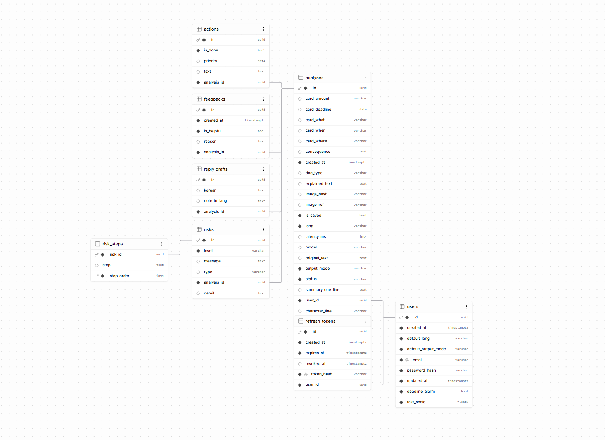

AI 배리어프리 문서 해석 · 팀 프로젝트 · 해커톤 3등
읽고 (Ilgo)
어려운 생활 문서를 사진으로 찍으면 AI가 쉬운 한국어 또는 영어로 풀어주는 배리어프리 서비스입니다. 백엔드 API 서버를 담당했습니다.
읽고 앱 소개 영상 (1분 11초)
프로젝트 소개
고지서, 안내문, 문자처럼 이해하기 어려운 생활 문서를 사진으로 찍으면 AI가 쉬운 한국어 또는 영어로 풀어 설명해 주는 배리어프리 서비스입니다. 외국인, 고령자처럼 정보 접근이 어려운 사용자를 위해 만들었고, AI Re-Local 해커톤 출품작입니다.
내 역할
팀에서 백엔드 API 서버 전체를 맡았습니다. 인증부터 AI 문서 분석 연동, 응답 구조 설계, 문서화와 테스트까지 서버 전 구간을 담당했습니다.
- 인증·인가 JWT 토큰 검증 필터, Stateless 정책, 경로별 접근 제어를 설계했습니다.
- 문서 분석 API 외부 AI 게이트웨이와 연동하고, 응답을 설명·위험도·핵심 카드·할 일 구조로 파싱했습니다.
- 요청 처리 이미지(multipart)와 JSON 요청을 모두 받고, 목록은 커서 페이지네이션으로 조회했습니다.
- 데이터베이스 Supabase의 관리형 PostgreSQL을 JPA로 연동해, 3일짜리 해커톤에서 DB 서버를 직접 구축하지 않고 스키마와 API에 집중했습니다.
- 안정성 전역 예외 처리와 레이트 리밋, Swagger 문서화, 인증·분석 테스트로 API를 안정화했습니다.
시스템 아키텍처
강조된 블록이 제가 맡은 백엔드 영역입니다.
AI 문서 분석
AI 게이트웨이가 돌려주는 해석 결과는 자유 형식 텍스트였습니다. 같은 고지서인데도 응답 구조가 매번 달라, 앱에서 화면을 어떤 규격으로 그릴지 정할 수 없었습니다.
응답 규격을 서버에서 고정했습니다. AI 결과를 설명 · 위험도 · 핵심 카드 · 할 일 네 구조로 파싱하고, 파싱이 실패해도 정해진 오류 응답으로 내려가게 묶었습니다.
앱은 응답 스키마 하나만 보고 화면을 만들 수 있게 됐고, Swagger로 명세를 공유해 짧은 해커톤 기간에 서버와 앱을 병렬로 개발했습니다.
구현 상세
- AI 응답을 설명 · 위험도 · 핵심 카드 · 할 일 네 구조로 파싱해 앱이 바로 렌더링할 수 있는 형태로 내려줍니다.
- 현장에서 문서를 찍어 올리는 흐름과, 이미 텍스트를 가진 요청을 모두 받아야 해 이미지(multipart)와 JSON 두 가지 요청 방식을 지원했습니다.
- 분석 기록은 계속 쌓이기만 하는 데이터라, 뒤로 갈수록 느려지는
offset방식 대신 커서 기반 페이지네이션을 골랐습니다.
인증 · 공통 계층
API가 늘어날수록 토큰 검증과 오류 응답 형식이 컨트롤러마다 조금씩 달라졌습니다. 외부 AI 호출도 제한 없이 열려 있어 남용을 막을 방법이 없었습니다.
검증을 공통 계층으로 끌어올렸습니다. JWT 필터에서 토큰을 검증하고 경로별 접근 정책을 한곳에 모았으며, 전역 예외 처리와 요청 레이트 리밋도 공통 계층에 뒀습니다.
새 API를 추가해도 인증과 오류 응답 형식이 자동으로 같아졌고, 인증·분석·문서 생성 테스트로 회귀를 확인할 수 있게 됐습니다.
구현 상세
- 서버가 세션을 들고 있을 수 없는 모바일 앱 클라이언트라, 요청마다
Authorization토큰을 검증하는 Stateless 구조를 택했습니다. - 전역 예외 처리로 모든 오류 응답 형식을 통일하고, 요청 레이트 리밋으로 AI 호출 남용을 막았습니다.
- Swagger로 API 문서를 자동화해 프론트와 규격을 공유했습니다.
- 인증, 분석, 문서 생성에 대한 테스트 코드를 작성했습니다.
데이터베이스 ERD

사용자 · 문서 분석 결과 중심 테이블 관계